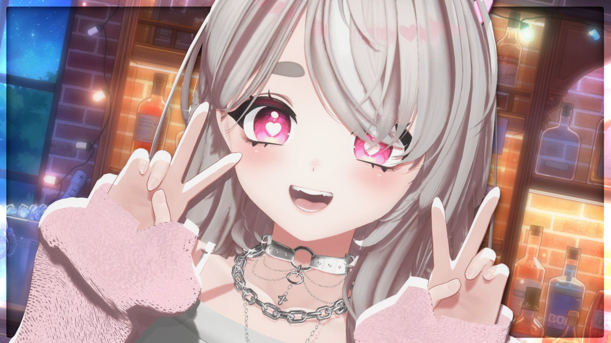
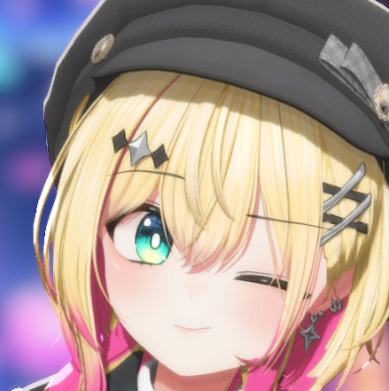
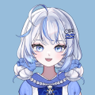

그림이 바뀔 때마다 다시 맞춰야 하는 값이다. 왼쪽 그림에서 눈을 누르면 오른쪽 행이 바로 그 결과로 바뀐다 — 눌러서 끌면 계속 따라온다.
얼굴이 작게 나오는 그림은 확대를 올린다. 확대는 지정한 초점을 중심으로 커지므로, 눈을 먼저 맞추고 당기는 편이 빠르다.
다 맞췄으면 아래 복사 를 눌러 src/app/streamerProfiles.ts 의 PORTRAIT_CROP_BY_NAME 을 통째로 바꾼다.
지금 값이 미리 들어가 있으므로 고칠 것만 건드리면 된다.


